AI 助手Copilot
AI 助手 / Copilot
面向聊天式客户端的统一接入，适合展示“一个入口”逻辑。
面向高密度技术产品、调查复盘和能力地图的材料面板式架构海报。这个主题把“中心对象、分区逻辑、节点关系与风险边界”组织成可扫读的彩色模块。
和 blue-technical-manual 不同，这个主题更强调 landscape 架构感：左接入、中央网关、右协议映射、底部生命周期、右侧卖点栏。
canvas #f7f2e8 · paper #fffdf8 · ink #0c1220 · purple/green/blue/orange 做证据、能力、风险与流程分层。

面向聊天式客户端的统一接入，适合展示“一个入口”逻辑。
强调 API/SDK 友好、统一请求头、统一端点与鉴权方式。
适合高密度工具链、脚本化调用和自动化集成说明。
突出外部系统、企业集成、异构协议桥接。
知识库检索 · 文件系统 · 代码执行 · 数据分析。
适合工具层、资源层、标准 MCP server 描述。
研究代理 · 任务执行代理 · 多步规划代理。
突出 agent 协作、任务分发和多步规划。
业务 API · 第三方服务 · SaaS 集成。
适合传统服务接入和 API 代理说明。
内部微服务 · 高性能服务 · 模型推理服务。
表达高性能、内部服务、桥接转换。
统一身份、统一权限、统一入口的第一道门。
记录每次调用与每个工具，适合合规与排障。
防止请求洪峰，给企业环境更稳定的边界。
中心对象、分区逻辑、节点关系——这是主题的第一主句。
插件、协议转换、observability、部署扩展都可以做成一排短句卡。
PyPI、Docker、Kubernetes、Redis federation 都适合放在“生产就绪”叙述里。
Color Material theme demo only · not a published card